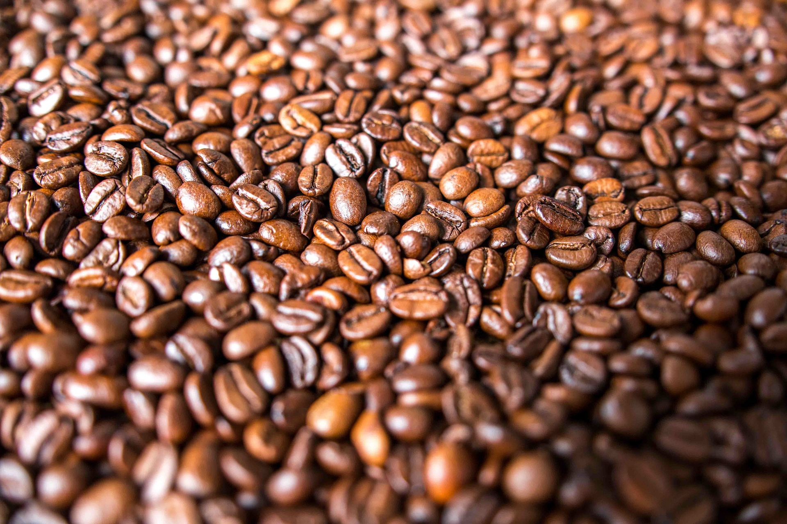
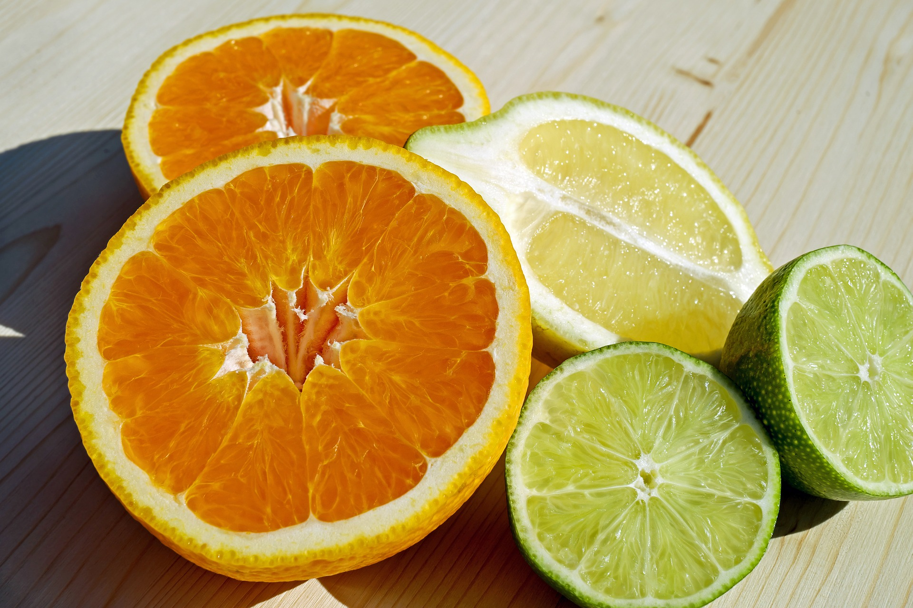

<div class="carousel-container">
    <i id=btnPrev class="fas fa-arrow-left"></i>
    <i id=btnNext class="fas fa-arrow-right"></i>
    <div class="carousel-slide">
        
        
        
        
        
        
        
    </div>
</div>